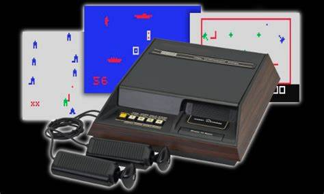
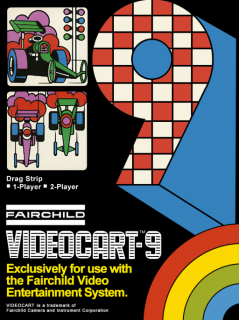
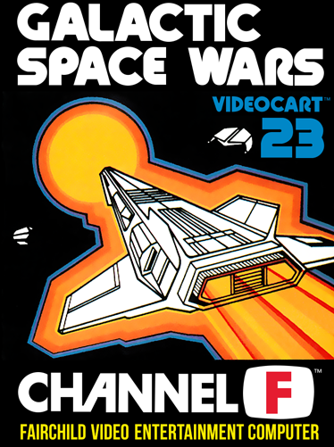

A Jornada dos Consoles: Fairchild-Channel-F O Primeiro Console com Cartuchos

O Fairchild Channel F foi um console de videogame lançado em novembro de 1976 na América do Norte.
Ele é notável por ser o primeiro console de videogame baseado em um microprocessador e por usar cartuchos ROM em vez de ter os jogos embutidos.
Aqui estão alguns detalhes interessantes sobre
o Fairchild Channel F:
História e Desenvolvimento:
- Em 1974, os funcionários da Alpex Computer Corporation, Wallace Kirschner e Lawrence Haskel, desenvolveram um protótipo de videogame doméstico com base em um Intel 8080 microprocessador e placas de circuito intercambiáveis contendo chips ROM.
- Eles não conseguiram interessar os fabricantes de televisores no sistema, mas então entraram em contato com a Fairchild, que enviou o engenheiro Jerry Lawson para avaliar o protótipo.
- Lawson ficou impressionado e sugeriu que a Fairchild licenciasse a tecnologia, o que a empresa fez em janeiro de 1976.
- Lawson substituiu o 8080 pelo próprio CPU F8 da Fairchild, e o designer industrial Nick Talesfore e o engenheiro mecânico Ron Smith adaptaram os controles complexos do protótipo em um único joystick e criaram os cartuchos de plástico para os jogos.
- Os cartuchos do Fairchild Channel F eram numerados de 1 a 26.
Especificações Técnicas:
- CPU: Fairchild F8
- Memória: 64 bytes de RAM e 2 KB de buffer de vídeo
- Display: Aproximadamente 104 × 60 pixels (de 128 x 64 VRAM)
- Entrada do controle: Joystick/paddle digital e JetStik (com botão de fogo adicional)
Legado:
- O Fairchild Channel F é frequentemente creditado como o primeiro console de videogame a usar cartuchos, abrindo caminho para futuros consoles como o Atari 2600 e o Nintendo Entertainment System.
- Ele simboliza o nascimento de uma nova era na tecnologia de jogos, tornando-se uma peça vital da história para qualquer entusiasta de videogames.
Jogos do Fairchild-Channel-F :
- Drag Strip : Um jogo de corrida de carros.

- Space War: Combates espaciais em um dos primeiros jogos de tiro.

Video :